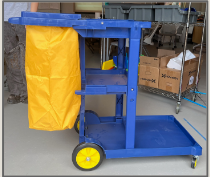
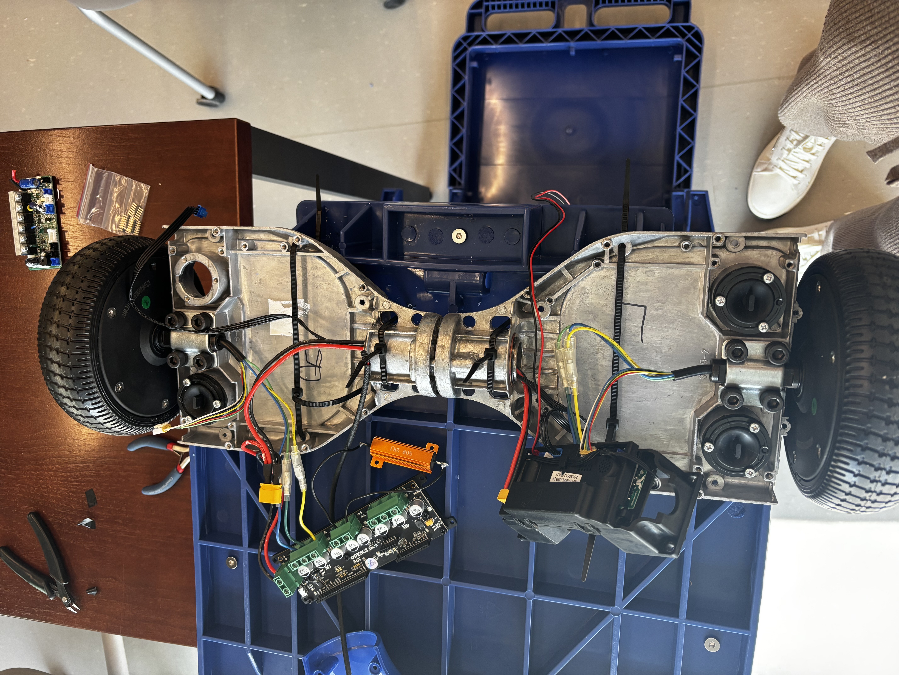
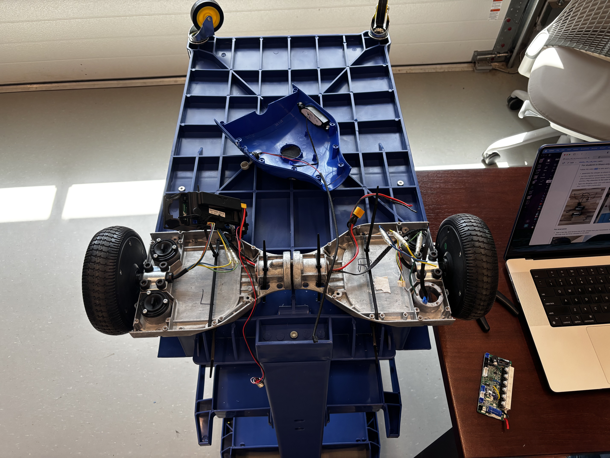
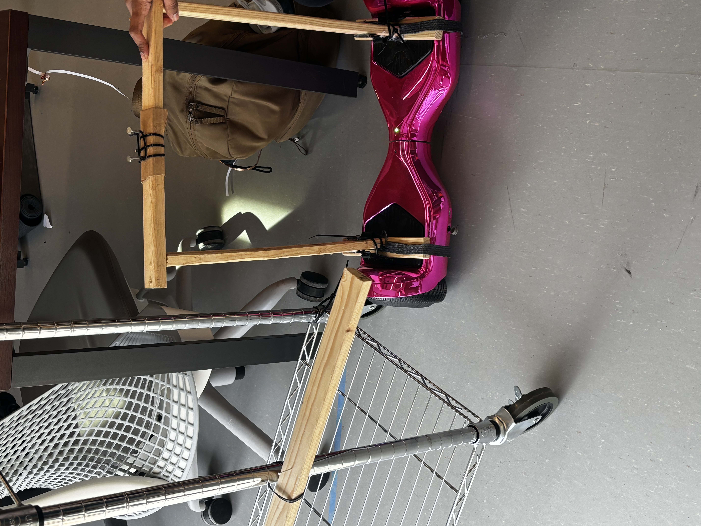
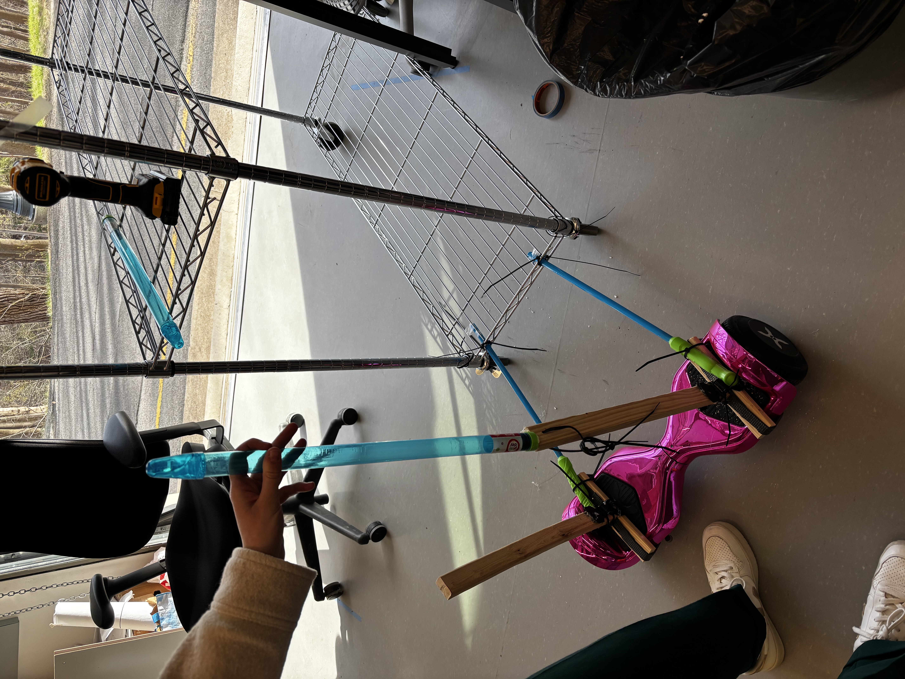

Robotic Housekeeping Cart
Retrofitting hotel service carts with smart features to support housekeepers and improve guest experience.
Showcasing Our Design
At the end of the semester, we presented our full journey — from field research at the Statler Hotel to prototyping and stakeholder feedback — in a final design review. The presentation encapsulates our iterative process, design decisions, and lessons learned.
Identifying Real-World Problem Areas
Through fieldwork at the Statler Hotel, we identified recurring challenges faced by hotel staff in daily operations. Below are key friction points we uncovered across various departments:
Front Desk / Bellboy
The hybrid system lacks synchronization between digital and manual workflows. Staff must manually sort keys and collect guest info, leading to delays, long lines, and inefficiencies.
Kitchen – Dishwashing
The dishwasher requires two people: one to load, one to unload. If operated solo, the constant glove switching and handwashing disrupt efficiency and hygiene standards.
Kitchen – Storage
Ingredient bins are heavy and follow a FIFO system. Moving older items to the front means manually lifting multiple bins, putting unnecessary strain on the kitchen staff.

Housekeeping – Towels
Managers manually carry heavy piles of dirty towels to the laundry room, wait, fold, and return them. This tedious routine creates significant physical strain and wasted time.
Housekeeping – Carts
Staff push heavy carts all day, reporting back and neck pain. Carts block hallways, obstruct visibility, and need frequent restocking—slowing down room servicing.
Benchmarking Analysis
As part of our research phase, we conducted a benchmarking analysis to evaluate existing systems and comparable technologies. This helped us identify gaps and opportunities that informed our design decisions.
Prototyping the Robotic Cart
We progressively prototyped the cart by retrofitting an off-the-shelf system with hoverboard components. Here's a look into our iterative process:
Baseline Housekeeping Cart
We started with a commercial plastic housekeeping cart as our base for retrofitting.
Hoverboard Integration (Close-up)
We exposed internal wiring and reconfigured the hoverboard’s power distribution.
Mounting the Drive System
The cart was flipped for easier mounting of the hoverboard’s wheels and motors.
Mockup: Hoverboard Test #1
Early test using wooden brackets to support a pink hoverboard under a wire rack.
Mockup: Hoverboard Test #2
Additional structural support tested with tubing and zip ties for corner stability.
How We Built It
Once we selected the hoverboard as our power base, we disassembled it and engineered a custom electronics stack that allowed us to control the motors and test behaviors under load. Here's how we made it work:
- Disassembly: We removed the hoverboard’s original plastic housing and took out its proprietary control board to access the motors and sensors.
- Motor Control Setup: The brushless motors with rotary encoders were rewired to connect to an ODrive motor controller for high-precision motion control.
- Processing Logic: A Raspberry Pi was configured to send commands to the ODrive and handle encoder feedback and tuning.
- Sensor Repurposing: We reused the original pressure sensors (from the footpads) to simulate user input and verify motor actuation under different triggers.
- Testing: After verifying all connections, we tested the response time, speed, and control fidelity before integrating it with the cart.
This hardware stack gave us full low-level control over the hoverboard wheels and opened possibilities for adding position control, obstacle sensing, and user overrides in future iterations.
Reflections, Feedback & Constraints
Personal Reflections
This project pushed me to bridge mechanical design with electronics integration in a fast-paced, iterative environment. I learned how to reverse-engineer existing systems, work with unfamiliar hardware like hoverboards and ODrive controllers, and test in unpredictable, real-world conditions. Beyond the technical work, I gained confidence in collaborative prototyping, troubleshooting, and decision-making under uncertainty.
Professional Feedback
During our presentation at the final design showcase, industry professionals and faculty appreciated the project’s ambition to retrofit a commercially available cart instead of building from scratch. Several highlighted our decision to keep the system modular and adaptable to a wide range of hotel environments. We also received praise for maintaining user-centered thinking throughout, especially in how we handled ergonomic concerns and hallway obstructions.
Technical Constraints
- Power Supply: Our portable power source needed to deliver consistent current without overheating the motor controllers during prolonged use.
- Weight Distribution: The hoverboard motors were not designed to carry a fully loaded cart with uneven weight — we had to reinforce the base and balance payloads carefully.
- Sensor Integration: Repurposing footpad pressure sensors required custom calibration and sometimes inconsistent trigger sensitivity.
- Limited Real-Time Control: Controlling the motors via Raspberry Pi and ODrive introduced slight delays when reading encoder data at high frequency.
- Hardware Fit: Mounting the drive base to the cart involved drilling and zip-tying in tight spaces, which complicated maintenance and repositioning.
While we didn’t have time to implement full autonomy or remote steering, this project served as a meaningful step toward smarter assistive tools in the hospitality industry — blending engineering with empathy and practicality.
Design Logbook Highlights
Throughout this class, I kept a detailed physical logbook documenting our sketches, design decisions, technical challenges, and research inspiration. Here's a curated gallery of some key spreads from the process:
Full Logbook Viewer
If you'd like to explore the full logbook, you can scroll through all pages directly below: